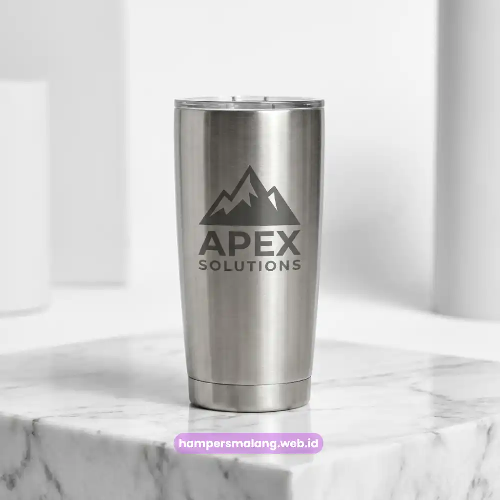

Seminarkit ID menyediakan paket souvenir kantor eksklusif untuk klien, mitra, dan karyawan perusahaan di Denpasar, mulai dari hampers bernuansa tenun endek Bali, gadget custom logo, hingga seminar kit siap kirim ke kawasan MICE Nusa Dua dan sekitarnya.
Lima kategori souvenir kantor paling banyak dipesan perusahaan di Denpasar: hampers bernuansa lokal, gadget custom logo, seminar kit, produk kulit atau kanvas, dan paket ramah lingkungan.
Budget dan jumlah penerima menentukan jenis paket yang paling efisien untuk dipesan.
Sentuhan elemen lokal seperti tenun endek Bali membuat souvenir kantor terasa personal, bukan sekadar barang massal.
Seminarkit ID melayani pemesanan souvenir kantor eksklusif dengan pengiriman ke Denpasar dan wilayah Bali lainnya.
Kenapa Perusahaan di Denpasar Memilih Souvenir Kantor Bersentuhan Lokal
Souvenir kantor bersentuhan lokal dipilih perusahaan di Denpasar karena memberi kesan personal sekaligus mempromosikan identitas kedaerahan kepada klien dari luar Bali.
Denpasar merupakan salah satu pusat aktivitas MICE dan perhotelan terbesar di Bali, dengan interaksi bisnis yang melibatkan hotel dan resor Bali, kampus seperti Universitas Udayana, hingga penyelenggara acara di kawasan MICE Nusa Dua.
Karena itu, souvenir kantor yang dikirim ke klien dari kota-kota lain sebaiknya membawa unsur khas Bali agar mudah diingat, misalnya kain tenun endek Bali sebagai pembungkus hampers atau motif lokal pada kemasan.
Elemen lokal ini juga membantu perusahaan menonjolkan citra sebagai partner bisnis yang memahami konteks daerah tempat mereka beroperasi, bukan sekadar mengirim merchandise generik.
Baca Juga: Ide Souvenir Kantor Eksklusif untuk Perusahaan di Semarang
5 Kategori Souvenir Kantor Eksklusif yang Paling Dipilih Perusahaan di Denpasar
Berikut lima kategori souvenir kantor eksklusif yang paling sering dipesan perusahaan, kampus, dan instansi di Denpasar untuk kebutuhan korporat.
Hampers korporat bernuansa lokal, berisi kombinasi produk premium yang dibungkus dengan sentuhan tenun endek Bali atau elemen anyaman khas daerah.
Gadget kantor custom logo, seperti powerbank fast charging, tumbler suhu digital, dan speaker bluetooth dengan cetak logo perusahaan.
Seminar kit profesional, terdiri dari tote bag, notebook custom, dan alat tulis untuk kebutuhan acara kampus maupun instansi.
Produk kulit atau kanvas custom, seperti dompet kartu, pouch laptop, dan tas dokumen dengan emboss logo perusahaan.
Paket hampers ramah lingkungan, menggunakan material bambu dan kertas daur ulang untuk apresiasi karyawan maupun klien yang peduli isu keberlanjutan.
Setiap kategori dapat disesuaikan volumenya, mulai dari kebutuhan puluhan unit untuk tim internal hingga ratusan unit untuk acara skala kampus atau korporat besar.
Baca Juga: Ide Souvenir Teknologi Kantor yang Bikin Karyawan di Semarang Betah Pakai

Cara Menentukan Paket Souvenir Sesuai Budget dan Jumlah Penerima di Denpasar
Paket souvenir kantor sebaiknya dipilih berdasarkan dua faktor utama, yaitu alokasi budget per penerima dan total jumlah penerima yang akan menerima souvenir tersebut.
Untuk jumlah penerima kecil, seperti klien VIP atau tamu penting dari hotel dan resor Bali, paket hampers eksklusif dengan isi lebih personal biasanya lebih sesuai dibanding gadget massal.
Sebaliknya, untuk kebutuhan skala besar seperti acara kampus atau seminar korporat, paket seminar kit dengan komponen standar namun tetap rapi lebih efisien dari sisi produksi dan pengiriman.
Alokasi budget per unit juga menentukan pilihan material.
Budget menengah ke atas umumnya cocok untuk produk kulit, kanvas premium, atau gadget custom logo, sementara budget yang lebih fleksibel dapat diarahkan ke paket ramah lingkungan berbahan bambu atau kertas daur ulang yang tetap terlihat eksklusif.
Baca Juga: Strategi Anggaran Hampers Klien agar Tetap Elegan dan Efisien
Contoh Pengadaan Souvenir Kantor untuk Klien Korporat di Denpasar
Salah satu pola pengadaan yang umum terjadi adalah ketika perusahaan mempersiapkan hampers untuk klien korporat menjelang acara di kawasan MICE Nusa Dua, dengan kebutuhan pengiriman tepat waktu ke lokasi acara.
Dalam kasus semacam ini, kombinasi hampers bernuansa tenun endek Bali dengan isi produk fungsional seperti tumbler dan alat tulis premium umumnya menjadi pilihan yang seimbang antara nilai eksklusivitas dan efisiensi produksi.
Perusahaan juga dapat menambahkan custom logo pada kemasan luar agar identitas brand tetap terlihat jelas saat diterima klien.
Pola serupa juga berlaku untuk kebutuhan instansi pendidikan seperti Universitas Udayana, di mana seminar kit dengan jumlah besar dan waktu produksi yang terjadwal menjadi prioritas utama dibanding tingkat personalisasi yang terlalu detail per unit.
Baca Juga: Paket Seminar Kit Profesional yang Cocok untuk Acara di Semarang
Tanya Jawab Seputar Souvenir Kantor Eksklusif di Denpasar
Souvenir kantor bersentuhan lokal dipilih karena memberi kesan personal sekaligus mempromosikan identitas kedaerahan kepada klien dari luar Bali.
Lima kategori yang paling banyak dipesan adalah hampers bernuansa lokal, gadget custom logo, seminar kit, produk kulit atau kanvas, dan paket hampers ramah lingkungan.
Paket dipilih berdasarkan alokasi budget per penerima dan total jumlah penerima: hampers eksklusif cocok untuk penerima sedikit seperti klien VIP, sedangkan seminar kit lebih efisien untuk acara skala besar.
Bisa, setiap kategori dapat disesuaikan volumenya, mulai dari puluhan unit untuk tim internal hingga ratusan unit untuk acara skala kampus atau korporat besar.
Ya, Seminarkit ID melayani pemesanan souvenir kantor eksklusif dengan pengiriman ke Denpasar dan wilayah Bali lainnya, termasuk kawasan MICE Nusa Dua.

Butuh Souvenir Kantor Eksklusif?
Dapatkan Penawaran Terbaik untuk Perusahaan Anda.
Ditulis oleh Tim Maroon Souvenir
Ahli dalam perancangan hampers dan corporate gift untuk perusahaan. Membantu klien memberikan kesan mendalam melalui hadiah berkualitas.